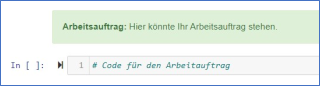
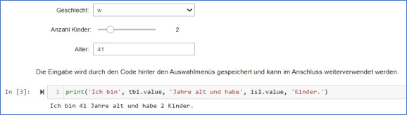
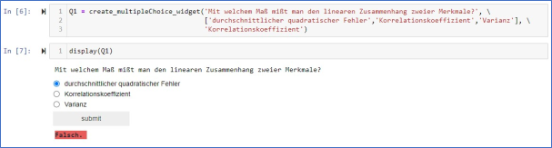

Gestalterische und interaktive Aspekte zum Einsatz von Jupyter Notebook in Onlinekursen im Kontext von Data Literacy
Toolbeschreibung
Jupyter Notebook ist einerseits eine webbasierte Programmieroberfläche zur Verarbeitung von Programmen in Sprachen wie Julia, Python oder R. Andererseits bezeichnen Jupyter Notebooks die Dateien, die in dieser Programmieroberfläche genutzt werden. Solche Dateien kann man sich wie interaktive Arbeitsblätter vorstellen. Im Folgenden verwenden wir die Bezeichnung Jupyter Notebooks (JN) für die genutzten Dateien und gehen speziell auf JN in der Programmiersprache Python ein.
In JN kann ein programmierter Code mit vielen Bausteinen ergänzt und optisch ansprechend dargestellt werden. Die Möglichkeiten reichen von farbigen Kästen oder einem Inhaltsverzeichnis bis hin zur Einbindung von Grafiken und Videos. Ausgeblendeter Code ermöglicht erweiterte didaktische Methoden. Entsprechend aufbereitet können JN von Lernenden mit beliebigen Programmierkenntnissen sowohl zum Erwerb neuer Lehrinhalte als auch zur Vertiefung oder Wiederholung verwendet werden.
Voraussetzungen & Zielgruppen
Dieser Beitrag richtet sich an Lehrende, die JN in ihren Lehrveranstaltungen einsetzen wollen oder bereits einsetzen. Grundkenntnisse der Lehrenden in Python sind für den Einsatz der nachfolgend vorgestellten Einsatzmöglichkeiten nicht notwendig, aber hilfreich. Eine Einführung in Python findet sich zum Beispiel auf https://www.python-lernen.de/, eine gute allgemeine Einführung in Jupyter Notebook bietet Jupyter Tutorial (o. D.).
JN in Lehrveranstaltungen kann man in einem niedrigschwelligen Zugang über einen loka-len Server oder über Anbieter wie JupyterHub zur Verfügung stellen. So benötigen die Lernenden keinerlei lokale Installation auf ihrem Endgerät und können die JN über einen Link direkt im Browser bearbeiten. Alternativ können Lernende eine der Entwicklungsumgebungen Anaconda oder JupyterLab lokal auf ihrem Endgerät installieren und JN hierüber nutzen. Die Gestaltungsmöglichkeiten für die JN führen dazu, dass, je nach Zielgruppe der Lehrveranstaltungen, die Studierenden wenige bis gar keine Programmiervoraussetzungen brauchen, um mit den JN zu arbeiten.
Kompetenzen
JN haben sich in verwandten Themenbereichen von Data Literacy als ein nützliches Werkzeug der Wissensvermittlung erwiesen (Fleischer et al., 2022; Ruiz-Sarmiento et al., 2021). Die im Folgenden dargestellten Gestaltungsaspekte wurden von den Autorinnen unter anderem für die JN im KI-Campus Kurs „Data Literacy – Daten interpretieren durch Data Mining“ (Bata et al., 2021) eingesetzt. Durch interaktive Elemente sollte ein selbständiges und niedrigschwelliges Erkunden der Programmiermöglichkeiten ermöglicht werden, zum Beispiel das Erkunden verschiedener Funktionen und des Parameterraums. Auch Multiple Choice Fragen können Lernende aktivieren und motivieren. Die genannten Aspekte sind speziell im Kontext von Selbstlernumgebungen relevant, da das Personalisie-ren der Lernumgebung durch interaktive und ansprechende Elemente zu verbesserter Nut-zung und größerem Lernerfolg beiträgt (Alturkistani et al., 2018).
Lerninhalte & Methoden
Im Folgenden werden einige Gestaltungsbeispiele für JN dargestellt. Der Code für alle vorgestellten Beispiele kann in einem ergänzenden JN eingesehen und verwendet werden (Bata et al., 2023).
Markdown-Zellen
JN bestehen neben den Code-Zellen aus sogenannten Markdown-Zellen. Diese können entweder mit Markdown-Code (Markdownguide, o. J. o. D.; Satopay, 2019) beschrieben oder mit HTML-Code (Beginner’s HTML Cheat Sheet, o. J. o. D.) gestaltet werden. Markdown-Zellen ermöglichen beispielsweise Textformatierungen, Farben und Emojis.

Strukturierende Elemente
Für die Orientierung in einem JN ist es gut, das Notebook so zu strukturieren, dass Ler-nende schnell Funktionen und Bedeutung der einzelnen Abschnitte erkennen können. Dies ist beispielsweise durch sogenannte Alert-Klassen in HTML möglich, mittels derer ein ein-gegebener Text in einer farbigen Box erscheint (Abbildung 1).
Ein weiteres Element zur Strukturierung, gerade bei längeren JN, ist ein Inhaltsverzeichnis mit Verlinkungen zu Kapiteln und Abschnitten, umgesetzt durch Querverweise. Zwischen Kapiteln oder Abschnitten kann das Setzen von Linien ebenfalls zur Strukturierung beitragen.
Einbindung von Grafiken und Emojis
Die Einbindung von Grafiken kann wesentlich zur Veranschaulichung von Daten genutzt werden. Wichtig ist hierbei, dass die Grafiken als Bilddateien am Speicherort des JN oder in einem extra hierfür angelegten Ordner abgelegt werden. In Markdown gibt es außerdem Bezeichnungen aller gängigen Emojis (https://github.com/markdown-templates/markdown-emojis), sodass man Emojis mittels des jeweiligen Kürzels in den Text einbinden kann.
Interaktive Elemente
In JN können interaktive Elemente wie Dropdown-Menüs, Schieberegler oder Multiple-Choice-Fragen durch die Einbindung des Paketes ipywidgets leicht integriert werden. Abbildung 2 zeigt ein Beispiel für ein Dropdown-Menü, einen Schieberegler und ein Eingabefeld. Diese Elemente ermöglichen beispielsweise, dass Lernende vorkommenden Variablen intuitiv Werte zuweisen.

Bei Multiple-Choice-Fragen ist eine automatische Rückmeldung möglich (Abbildung 3).

Ausgeblendeter Code
Man kann in JN auch Code ausblenden. Dies ist bei komplizierteren Codeabschnitten in JN sinnvoll, um Abschreckung oder Ablenkung zu vermeiden oder um den Code bewusst zu verschleiern, wie bei der Erstellung von Multiple-Choice-Fragen (siehe Abbildung 3) nötig. In JN (Bata et al., 2023) werden zwei Möglichkeiten der Umsetzung, eine über das Paket hide_code und eine über die Einbindung einer vor-gefertigten JavaScript-Funktion, vorgestellt.
Erkenntnisse & Erfahrungen
Gut strukturierte, ansprechend gestaltete und interaktive JN sollen Lernende dabei unterstützen, sich mit dem zugehörigen Lerninhalt auseinanderzusetzen. Beispiele für einige hier vorgestellte und weitere getalterische Elemente finden sich unter anderem im bereits erwähnten Onlinekurs „Data Literacy – Daten interpretieren durch Data Mining“ (Bata et al., 2021), dessen JN unter https://github.com/KI-Campus/DaLi-Datamining zu finden sind. Im Onlinekurs finden sich zudem Beispiele für die Nutzung von JN in Lernvideos.
Weitere Ideen zu didaktischen Aspekten der Nutzung von JN bietet beispielsweise „Teaching and Learning with Jupyter“ (Barba et al., 2019). Dort finden sich unter anderem weitere Tipps und Best-Practice-Beispiele zur Nutzung von JN in verschiedenen Lehrszenarien.
Autorinnenprofile
Beate Rhein https://www.th-koeln.de/personen/beate.rhein/

Katharina Bata https://www.th-koeln.de/personen/katharina.bata/
Angela Schmitz https://www.th-koeln.de/personen/angela.schmitz/
Förderhinweise: Die Data Literacy Initiative der TH Köln wird durch das Ministerium für Kultur und Wissenschaft des Landes Nordrhein-Westfalen in Kooperation mit dem Stifterverband in dem Programm „Data Literacy Education.nrw“ gefördert.